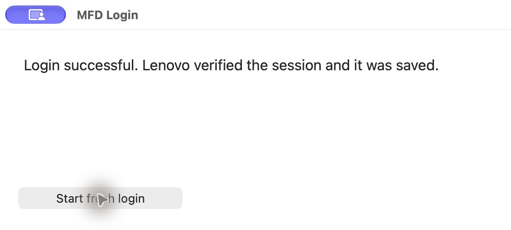

November 11, 2026 · Verified on one owner-authorized phone
Razr XT2453V bootloader unlock
Hardware result: unlocked. Fastboot reported flashing_unlocked after the exact original stock LK was restored and rebooted. The owner subsequently confirmed Android reached its post-reset setup flow.
Publishing branch · Complete runbook
Exact scope
| Item | Verified value |
|---|
| Phone | Motorola razr 2024 · XT2453V · aito · MediaTek MT6878 |
| Firmware | Android 16 · W1UCS36H.96-35-12-5 · Tracfone–Visible |
| Bootloader | MBM-3.1-aito-4fb16a-W1UCS36H.96-35-12-5-77c53 |
| Slot / host | Active slot A · Apple Silicon Mac |
| Before → after | oem_locked → flashing_unlocked |
| Device data | Factory reset executed through the bootloader unlock flow |
| Scope left untouched | No root, custom ROM, SIM unlock, or separate FRP removal |
What we did and learned
| Stage | Outcome |
|---|
| Identify and preserve | Read model/build/state using ADB and Fastboot. Partition readback was unsupported. Older public firmware was not substituted. |
| Repair authentication | Fixed a Mac helper lifecycle problem, exposed upstream errors, then completed a fresh Lenovo login through Chrome with a native callback receiver. Added persistent status and duplicate-callback handling. An alternative downloaded app failed signature verification and was not run. |
| Locate exact firmware | Authenticated catalogue lookup worked after changing SIM count from numeric 2 to the API enum Dual. Downloaded the exact 8.22 GB package from Lenovo. |
| Validate and patch | All ZIP CRCs passed; original LK matched its manifest hash and the phone's MBM build. Added the missing pyasn1 dependency. Val Protocol found the required routines; all five signed subimages in the patch passed its verifier. |
| Unlock | Flashed only active lk_a and rebooted. The first 30-second confirmation expired even though Fastboot returned OKAY. With the owner ready, Volume Down selected Yes and Volume Up confirmed the next prompt. Verified flashing_unlocked. |
| Restore and verify | Restored exact original LK, rebooted that bootloader and rechecked flashing_unlocked. Booted Android; the owner confirmed setup. Restoration is demonstrated for this build only, not a general replacement for upstream guidance. |
Actual login capture

Actual capture of the Mac helper used during the successful session. It contains no account or device identifier. It is not a phone screenshot or proof of unlocking; bootloader evidence is below. No phone screenshot was captured.Evidence and revisions
Original hardware-run Valhalla revision:
9535f793398082e7597bfc5063de4837ae7b471c
Pinned firmware-downloader revision:
b5ea93abf5bc02ee56f5f7a9601320b9d80e3396
Stock ZIP SHA-256:
3ab304685f72c5d9e6003ac33fec994cc5f68802254f36c77ae9e9a208c76e82
Original LK SHA-256:
9097c31de4916ffb959894369d67737fec1e98b697d44e0096ce99c1046640ff
Sanitized operation output:
(bootloader) Bootloader is unlocked! Rebooting phone to fastboot mode
securestate: flashing_unlocked
[original stock LK restored; bootloader rebooted]
securestate: flashing_unlocked
What the new branch adds
A pinned local setup, portable native Mac callback helper, exact Lenovo catalogue lookup, stock download and hash checks, offline patch preparation, explicit erase consent, per-device key generation, timed physical confirmation handling, verified stock restoration, a recovery command, tests and a CI workflow. No firmware, patched images, serial/IMEI, keys, account tokens or signed download URLs are published.
Validation and practical limits
One actual hardware unlock is verified. The packaged runner is new: 38 source-only tests pass, including mocked failure and retry transitions; the Swift helper compiles; the packaged authenticated catalogue lookup succeeds; and the prepare command successfully rebuilt and verified a fresh patch from the exact stock archive without changing a phone. A second full hardware run of the packaged automation has not been performed. CI status is recorded separately after publication.
This is a guarded reproduction of a successful session, not a universal or guaranteed one-click unlock. Lenovo must still supply the exact build, or the user must provide the exact ZIP. Other models, firmware, slot B, Windows and Intel-Mac hardware are not validated by this result. Image verification does not compare against hardware efuses or guarantee recovery from a hard brick. The earlier in-app-browser missing-state error's precise upstream cause remains unproven.
How others start
git clone --branch feat/xt2453v-android16-macos https://github.com/emrickk/Valhalla.git
cd Valhalla
python3 tools/razr2024/setup.py
python3 tools/razr2024/unlock.py prepare
python3 tools/razr2024/unlock.py unlock
Read the runbook and install its prerequisites first. Back up phone data, keep the stock recovery archive, and use only an owned or authorized device. Unlocking erases data and firmware modification can brick the phone.